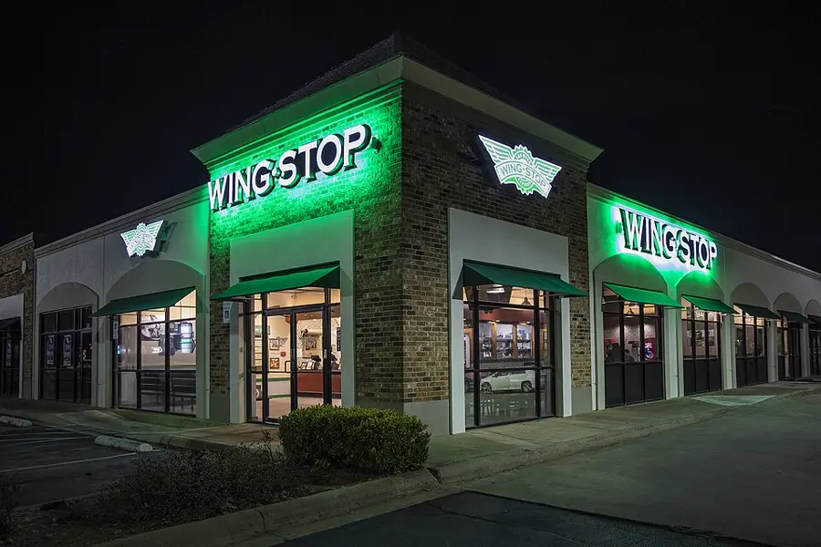

대표 로고대표 브랜드 마크
대표 로고대표 브랜드 마크윙스탑 Wingstop
윙스탑(Wingstop)은 주로 버펄로 윙을 판매하는 미국의 다국적 패스트푸드 체인이다. 매장은 1930년대와 1940년대의 제트기 이전 항공 테마로 꾸며져 있다.
최종 업데이트
윙스탑은 어떤 브랜드인가
윙스탑은 뼈 있는 윙과 순살 윙, 치킨 텐더 등 닭고기 제품을 중심으로 메뉴를 구성한 미국의 프랜차이즈 레스토랑 체인이다. 1994년 텍사스주 갈랜드에서 설립되었으며 1997년부터 프랜차이즈를 제공하기 시작했다.
Nation's Restaurant News에 따르면 2014년에서 2016년 사이 시스템 전체 매출과 매장 수 성장률 모두에서 미국 내 세 번째로 빠르게 성장하는 레스토랑 체인이었다. 멕시코, 영국, 캐나다를 비롯한 여러 나라에도 매장을 두고 있다.
2022년 5월에는 대한민국 진출 계획을 발표했다. 2026년 기준 전 세계에 3,000개 이상의 음식점을 보유하고 있다.
윙스탑은 어떻게 시작되고 성장했나
윙스탑은 1994년 텍사스주 갈랜드에서 안토니오 스와드와 베르나데트 피아셰티에 의해 설립되었다. 첫 번째 프랜차이즈 매장은 1997년에 문을 열었으며, 2002년까지 200만 개의 윙을 판매했다고 주장했다.
2005년에 점심 식사 제공을 시작했고, 2009년에는 순살 제품 판매를 시작했다. 2003년에 제미니 인베스터스(Gemini Investors)에 인수되었고, 2010년에 로어크 캐피털 그룹에 매각되었다.
2015년에는 주당 19달러의 공모가로 상장되었으며, 그해 이들의 이익은 두 배 이상 증가했다.
윙스탑의 브랜드 아이덴티티는 무엇인가
버펄로 윙을 중심으로 13가지 윙 소스를 갖추고, 제트기 이전 항공 테마의 매장을 운영하는 미국의 패스트푸드 체인이다.
윙스탑의 대표 제품과 서비스는 무엇인가
윙스탑의 메뉴에는 뼈 있는 윙과 순살 윙, 치킨 텐더, 프라이드 치킨 샌드위치와 같은 다양한 닭고기 제품이 포함되어 있다. 13가지의 윙 소스가 있으며, 일부 소스는 마케팅 활동의 일환으로 한정 기간 동안만 제공된다.
사이드 메뉴로는 감자튀김, 옥수수 튀김, 야채 스틱(당근 및 셀러리)이 있다. 소스에는 랜치, 블루 치즈, 허니 머스터드, 치즈 소스가 포함되며, 디저트 옵션으로 초콜릿 브라우니도 있다.
2021년 6월 21일에는 윙 대신 닭다리살을 판매하는 다이렉트 디지털 전용 브랜드 ThighStop을 발표했다.
윙스탑은 지금 어떤 상태인가
2026년 기준 윙스탑은 전 세계에 3,000개 이상의 음식점을 보유하고 있으며, 2025년 11월 26일 현재 국제적으로 15개국에서 운영되고 있다. 최근 오스트레일리아, 바레인, 쿠웨이트, 푸에르토리코, 사우디아라비아, 네덜란드로 확장했으며, 2025년 12월 8일에는 아일랜드 더블린에 첫 매장을 열었다.
2025년 12월 13일에는 MBK 센터를 통해 태국 시장에 진출했고, 이탈리아로 확장하려는 의사를 재차 강조했다.
윙스탑 로고는 어떻게 변해왔나
대표 로고대표 브랜드 마크사진으로 보는 윙스탑의 역사

자주 묻는 질문
윙스탑는 어느 나라 브랜드인가요?
윙스탑는 미국의 식음료 브랜드입니다.
윙스탑는 언제 설립되었나요?
윙스탑는 1994년 설립되었습니다.
윙스탑의 브랜드 아이덴티티는 무엇인가요?
버펄로 윙을 중심으로 13가지 윙 소스를 갖추고, 제트기 이전 항공 테마의 매장을 운영하는 미국의 패스트푸드 체인이다.
윙스탑의 대표 제품은 무엇인가요?
윙스탑의 메뉴에는 뼈 있는 윙과 순살 윙, 치킨 텐더, 프라이드 치킨 샌드위치와 같은 다양한 닭고기 제품이 포함되어 있다.
윙스탑는 현재 어떤 상태인가요?
2026년 기준 윙스탑은 전 세계에 3,000개 이상의 음식점을 보유하고 있으며, 2025년 11월 26일 현재 국제적으로 15개국에서 운영되고 있다.
윙스탑의 본사는 어디에 있나요?
윙스탑의 본사는 댈러스에 있습니다(위키데이터 기준).
윙스탑의 공식 웹사이트는 어디인가요?
윙스탑의 공식 웹사이트는 https://www.wingstop.com/ 입니다.
출처와 검증
윙스탑 관련 참고: 공식 웹사이트 · 위키데이터 Q8025339 · 한국어 위키백과 · 영어 위키백과. 브랜드명은 한글과 원어를 함께 표기하되 데이터에 없는 표기는 만들지 않습니다. 기원 국가·설립연도는 검수된 정의문에서 확인된 값을 우선하고, 없을 때만 공식 웹사이트 URL이 일치하는 위키데이터 개체의 값을 씁니다. 연 매출은 미국 증권거래위원회(SEC)에 제출된 연차 보고서(10-K)의 XBRL 값이며 달러 금액을 반올림했습니다. 위키데이터 값은 2026-11-01 기준입니다.